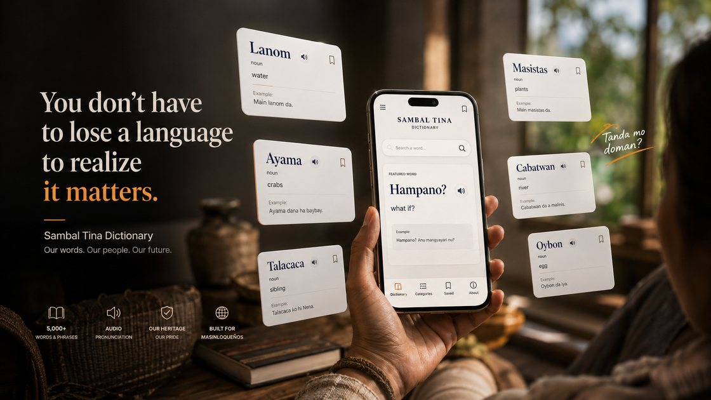

Masinloc, connected.To the world.
Connecting Masinloqueños to the world through our places, culture, language, opportunities, businesses and community services.
One community platform
Everything starts with knowing where to go.
Masinloc Connect brings the useful parts of the town together without turning the experience into a government portal. Residents can act, visitors can understand the place, businesses can be found, and culture stays visible.
Discover Masinloc
Real places, local stories, food, coastlines and experiences from across Masinloc.
02 / HELP DESKReport and get help
Open the resident Help Desk for incident reporting, location capture and response tracking.
03 / LANGUAGESambal Tina
Explore the language Masinloc still speaks and the dictionary built to help keep it in use.
04 / JOBSFind opportunities
See local job opportunities and connect people with work that matters closer to home.
05 / MARKETPLACESupport local business
Find Masinloc businesses, food, products and services in one local marketplace.
06 / HISTORYKnow the record
Read the history, evidence and context behind the stories Masinloc tells about itself.
The place
See Masinloc as it actually is.
Not stock tourism. Real locations from the coast to the river, islands, church, caves and inland landscapes.
Explore places
Language is not a museum piece. It stays alive when people can use it.Culture that stays in motion
Remember it. Speak it. Pass it on.
Masinloc's identity lives in language, memory, public history and the people who continue carrying them forward.
Help Desk
When something happens, the next step should be obvious.
The resident Help Desk is built around a simple incident flow: report what happened, share location when available, and follow the case as responders handle it.
Open Help Desk- 01Report
Describe the incident without needing to hunt through multiple pages.
- 02Share location
Allow GPS when appropriate so responders can understand where help is needed.
- 03Route and respond
The system includes separate PNP and MDRRMO responder interfaces.
- 04Track status
Keep the incident lifecycle visible instead of ending at submission.
Masinloc Connect
The website tells you. The app helps you do.
The website remains the public source of information. Masinloc Connect is being shaped as the everyday action layer for saved places, opportunities, marketplace activity, language tools and community services.
The platform starts from the town's actual places, language, businesses, history and needs.
Historical and civic information is easier to trust when sources and uncertainty are visible.
Mobile usability, direct paths and practical services matter more than decorative complexity.